Introduction
- the fundamental parameters of stars
- some problems with fitting spectra
- how Gaussian processes can help
- some interesting applications
Fundamental parameters of stars
- $M_\star$
- $T_{\rm eff}$
- $\log g$
- $[{\rm Fe}/{\rm H}]$
Stellar evolution
Models make predictions of stellar properties as a function of mass and age. This relationship is rather uncertain for young stars.
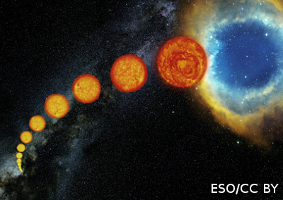
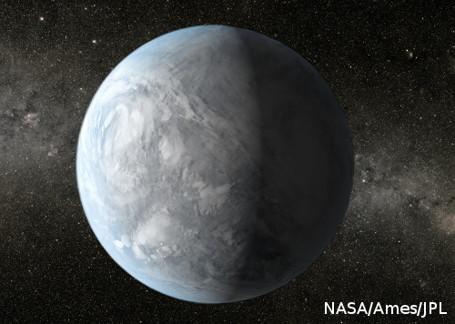
Exoplanet properties
Determined relative to host star properties, and biases or uncertainties strongly affect habitable zone and $\eta_\bigoplus$ (Kane11)
My thesis: Fundamental Properties of Young Stars
Part I: Mass
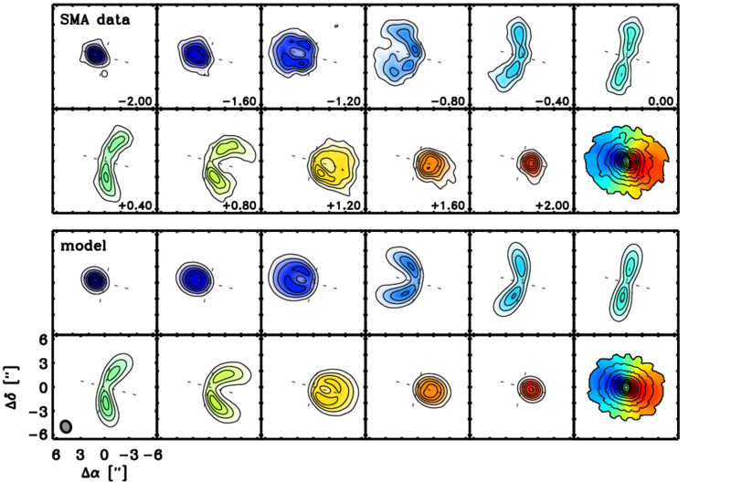
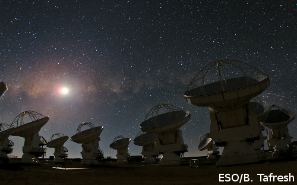
Sub-mm interferometric observations of stars with circumstellar disks. Use Keplerian rotation to derive a very precise and accurate stellar mass ($< 5$%) (Rosenfeld+12)
My thesis: Fundamental Properties of Young Stars
Part II: The other properties
There are many ways to determine
$\{ T_{\rm eff}, \log g, [{\rm Fe}/{\rm H}] \}$
Depending on your desired precision and the nature of your target, you can use photometric colors, astroseismology, optical/IR interferometry, or spectroscopy.
By far, spectroscopic inference is the most prevalent and general purpose (e.g., spectral typing).
To leverage the high quality synthetic spectra that now exist, we develop a forward model of the observed stellar spectrum.
fitting spectra
| Desire |
|
| Problem |
|
| Solution |
|
The problem in a nutshell
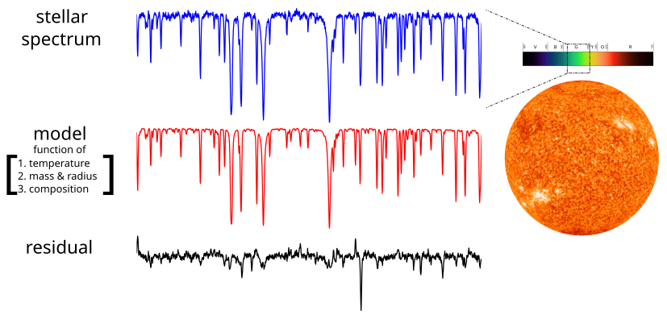
Spectroscopic fits are different from "normal" $ \chi^2$ fits
The problem in a nutshell
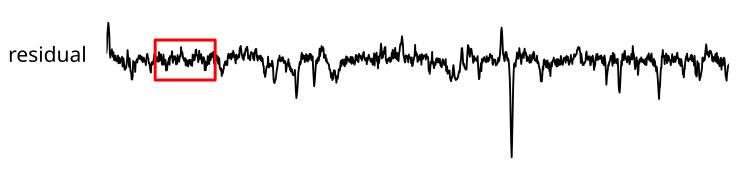
Existing stellar synthesis is amazing, but not perfect.
- low scale, mild residual structure
- "outlier" spectral lines with the wrong strength
How can you fit ~1,000 or more lines
with only a few parameters?
Spectral lines are the fundamental "data points"

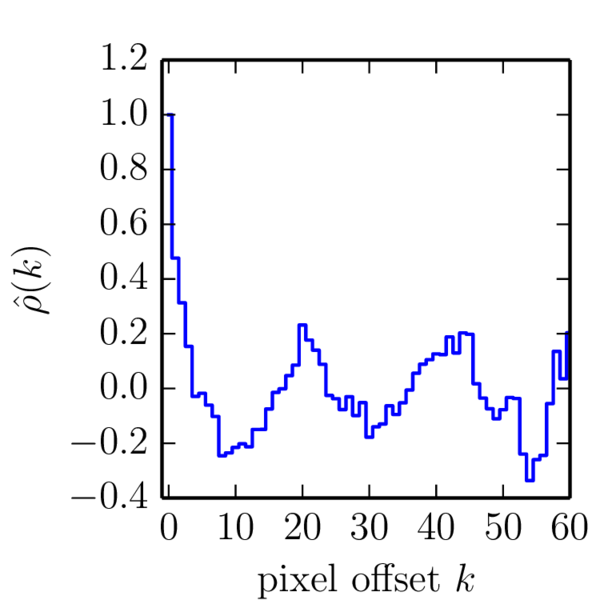
Czekala+14
Fitting spectra $\ne$ vanilla $\chi^2$
- the fundamental "data point" of a spectrum is a spectral line
- when the strength of a line is incorrect, it causes several correlated pixel residuals
- you are saved only if your model is perfect
- with any large swath of spectrum,
or at least very difficult to attain in practicefailureperfection is not an option

How
Gaussian processes
can help
How to cope with imperfection
the residuals are a spectrum $\textbf{R}$
the pixel "variances" are now a covariance matrix $C$
$$p(D | \theta) = \frac{1}{\sqrt{(2 \pi)^N \det(C)}} \exp\left ( -\frac{1}{2} \textbf{R}^T C^{-1} \textbf{R} \right ) $$
$$ \ln[p(D | \theta)] = -\frac{1}{2} \textbf{R}^T C^{-1} \textbf{R} - \frac{1}{2} \ln \det C - \frac{N}{2} \ln 2 \pi $$
the structure of $C$ is set by a kernel function analogous, say, to the two-point correlation function
$k(\lambda_i, \lambda_j) $
$\sim 5$ pixels correlated
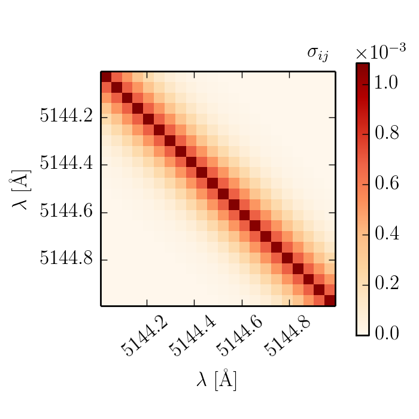
This covariance matrix accounts for the correlated structure of the residuals we saw earlier.
Checking the residuals
Zoom in from the previous wide view of the residual spectrum
Globally covariant structure
Downweight outlier lines

Stellar posteriors
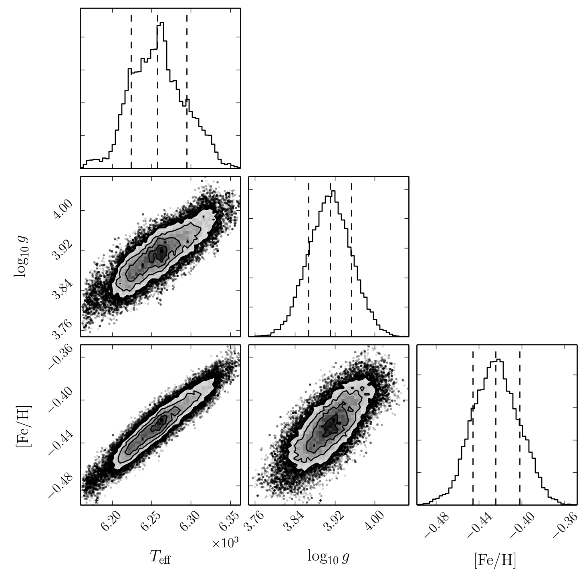
- posteriors naturally inflate to capture uncertainty in model
- preserves parameter degeneracies
- extensive tests w/ WASP-14 check out
Hyperparameters
- covariance hyperparameters are sampled self-consistently
- better models have lower "noise"
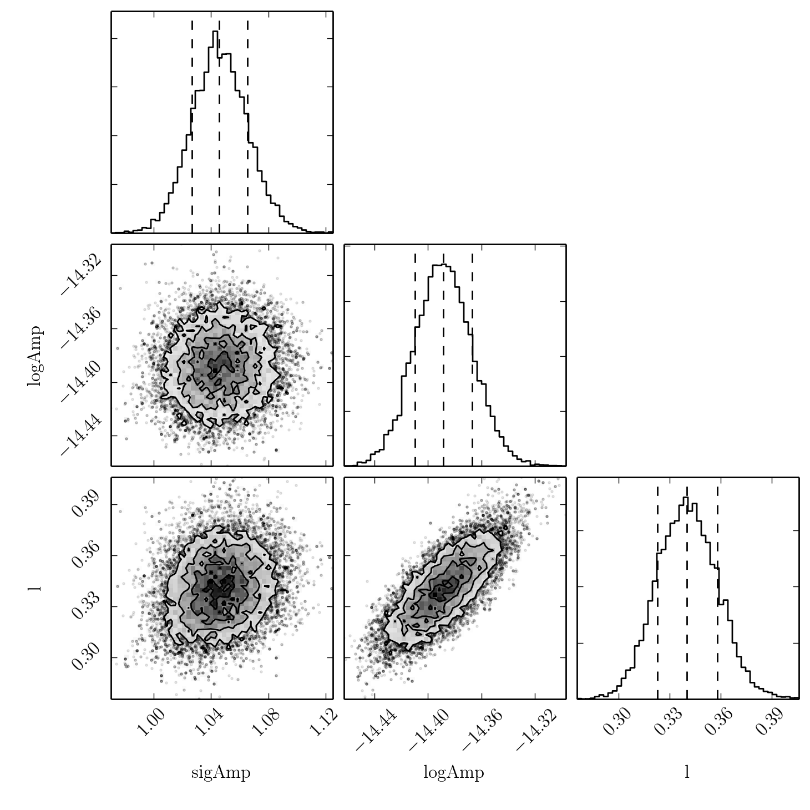
Covariance applications
- veiling continuum for T Tauri stars
- M dwarf molecular bands
- modular code can use any spectral library as a backend

Cycle of improvement
- Fit many stellar spectra ($N > 50$)
- Learn the covariance structure including bad regions
- Use the covariance matrix to regress out what the model should be. This is not unlike how the $UBVRI$ photometric passbands are determined (Bessell & Simon 2012).
These improvements to the models could be used to inform the modellers what might need improvement.
If you're impatient/a DIY-er, you can use your own self-calibrated synthetic spectra.
Outlier line hyperparameters
- covariance hyperparameters are sampled self-consistently
- better models have fewer outliers
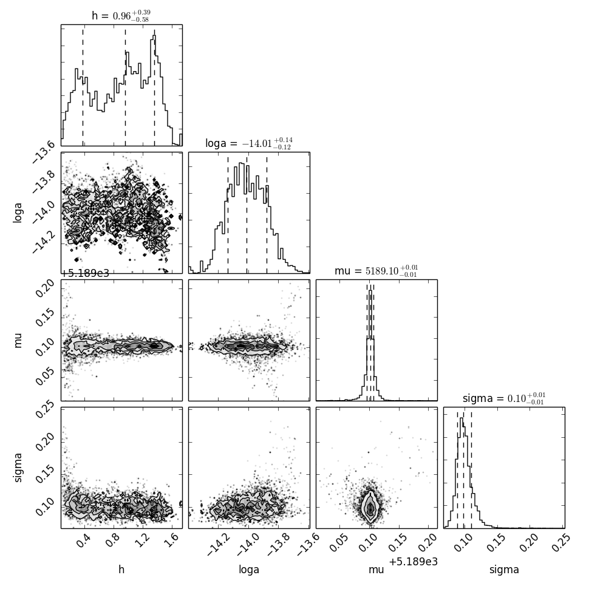